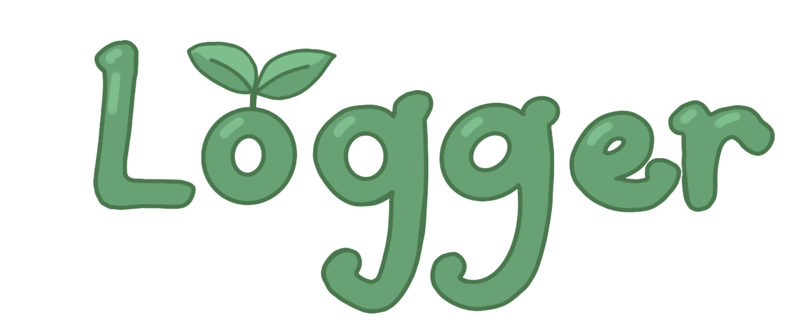

A Crossy Road-inspired game. Try to cross the pond without getting eaten by a duck or hit by a lily pad! Originally built in p5.js, then redeveloped using Java Processing library and Object-Oriented Programming (OOP) principles.
May 2023
Created during the Wellesley Hackathon with a team of 3 and awarded the WHACK 2023 Best Community Hack. We built a web-based platform for image uploads, using HTML, CSS, and JavaScript for front-end development and GitHub for version control. We integrated Firebase for backend image storage to ensure efficient data handling and user file management in a cloud environment.
November 2023
A portfolio site for websites developed for Intro to Web Design. I built the site usiing HTML, CSS and Bootstrap, emphasizing responsive and optimized design and applying fundamental design principles.
December 2023
A virtual keyboard for beginners to learn how to play using the computer keyboard! Play the Piano is a virtual in-browser keyboard built using p5.js that allows the user to play using the computer keyboard keys or by clicking on each key. I played around with ADSR envelope to try to recreate the sound of pressing a key on a keyboard and how it slowly fades away. I used the midiToFreq function to convert the MIDI values to the right frequencies. The keys are labeled with the computer key to play it as well as labels of the music note above it. Users can adjust the volume of the keys using the slider as well as generate a random song and its notes by clicking the Need Inspiration button. If the user wants to record their playing, they can press the Record button to record audio and then listen to and save their audio after pressing the button again.
December 2023
A Letterboxd web scraper built using Python and Scrapy.
A place to log your reading! The Goodreads of my dreams.
